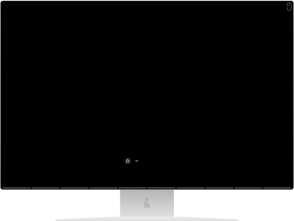

"Your Expert in Crafting Business-Boosting Landing Pages, WordPress CMS, and WooCommerce e-Stores Themes"
"Elevate Your Online Presence with Best Practices, User-Friendly Design, and More! Your Vision, my Expertise."
w
e
b
De
v
el
opment

Introduction
Welcome to my design experiment, where I invite you to explore the intersection of international design patterns, with a particular focus on the rich heritage of European design.
In this portfolio project, I'm using patterns, each representing a significant chapter in the history of design. These methodologies are Asynchronous Swiss typography, the principles of the German Art School Bauhaus, and the fundamentals of USSR Constructivism as exemplified by the Art Group UNOVIS.
Each of these approaches rooted in different cultural and artistic contexts, have contributed to the visual language that we encounter in various media, including books, magazines, web design, and graphics based on expiriences spearheaded by influential artists such as Kazimir Malevich, Paul Klee, El Lissitzky, Aleksander Rodchenko, and Theo van Doesburg.
Asynchronous Swiss typography is an evolution of traditional Swiss typography, known for its minimalist and clean approach. It prioritizes clarity, readability, and the effective use of white space. What sets Asynchronous Swiss typography apart is its integration of asynchronous communication principles. This concept introduces non-linear, dynamic elements into the design, creating an engaging and interactive experience for the viewer. It challenges the conventional notion of static design, guiding the audience through content in a captivating and innovative way.
The German Art School Bauhaus, founded by Walter Gropius, is a hallmark of design that focuses on the synergy of art and craftsmanship. Bauhaus principles emphasize functionality, simplicity, and the seamless integration of form and function. This approach has had a profound influence on a wide array of design disciplines, from industrial design and architecture to typography and graphic design. The enduring legacy of Bauhaus is characterized by clean lines, geometric shapes, and minimalist aesthetics, which continue to define modern design.
USSR Constructivism is a movement that pushed the boundaries of design through abstraction and the use of geometric forms catalyst for societal transformation. Its influence is evident across diverse design disciplines, from graphic design to architecture. The innovative spirit of USSR Constructivism by The Art Group UNOVIS (УНОВИС) has left an indelible mark on the world of International design.
In this portfolio, you will witness the seamless fusion of Swiss typography, Bauhaus simplicity, and Constructivist abstraction. The elements of asynchronous communication guide you through a dynamic visual journey, highlighting the significance of whitespace and the deliberate arrangement of design elements.

Work's sector

- landing-pages & web-pages
- web-design & web Content
- wordPress develop
- wooCommerce E-stores
Notes!
Creating a website involves several steps. Here's a general guide to get you started:1. Define Your Purpose:
Determine the purpose and goals of your website. Is it for personal blogging, a business, portfolio, e-commerce, or something else?
2. Choose a Domain Name:
Select a domain name that reflects your website's content and is easy to remember. Ensure it's available for registration.
3. Select a Hosting Provider:
Sign up with a reliable web hosting provider. Consider factors like server reliability, customer support, and pricing.
4. Choose a Website Building Platform:
Decide whether you want to build your website from scratch using HTML/CSS or use a content management system (CMS) like WordPress, Wix, or Shopify.
5. Design Your Website:
Pick a website template or theme that aligns with your content and branding. Customize it by adjusting colors, fonts, and layout.
6. Create Content:
Add high-quality content, including text, images, videos, and other media relevant to your website's purpose. Ensure your content is engaging and valuable.
7. Optimize for SEO:
Implement on-page SEO strategies, such as keyword optimization, meta tags, and image optimization, to improve your website's search engine visibility.
8. Mobile Responsiveness:
Ensure your website is mobile-responsive, as many users access websites via smartphones and tablets.
9. Test Your Website:
Thoroughly test your website's functionality, checking for broken links, slow loading times, and browser compatibility issues.
10. Secure Your Website:
Implement security measures to protect your site from malware and hacking. Use SSL encryption for data security.
11. Launch Your Website:
Once you are satisfied with the design and content, publish your website and make it live for visitors.
12. Promote Your Website:
Use social media, email marketing, and other promotional methods to drive traffic to your website. Share your content regularly and engage with your audience.
I missed a lot, but that's not all list.
Remember that creating a website is an ongoing process. It's not just about building it.
It's about maintaining and growing it over time. Be patient and willing to learn as you go along, and your website will continue to evolve and meet your goals.